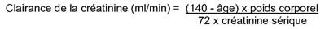

RÉSUMÉ DES CARACTÉRISTIQUES DU PRODUIT
ANSM - Mis à jour le : 27/04/2010
RANITIDINE ACCORD HEALTHCARE 150 mg, comprimé effervescent
2. COMPOSITION QUALITATIVE ET QUANTITATIVE
Chlorhydrate de ranitidine .................................................................................................................. 168 mg
Quantité correspondant à ranitidine base ............................................................................................ 150 mg
Pour un comprimé effervescent.
Excipients: sodium (23 mmol ou 533 mg), Jaune orangé S (E110).
Pour la liste complète des excipients, voir rubrique 6.1.
Comprimé effervescent.
Comprimés ronds aux bords biseautés et aux faces plates, de couleur orange clair, ne portant aucune inscription sur les deux faces et dotés d'une légère odeur de menthe poivrée.
4.1. Indications thérapeutiques
· ulcère duodénal.
· ulcère gastrique bénin.
· traitement à long terme des ulcères duodénaux.
· œsophagite par reflux.
· syndrome de Zollinger-Ellison.
4.2. Posologie et mode d'administration
Dissoudre un comprimé effervescent dans un verre d'eau. Ne pas casser le comprimé effervescent. Attendre que le comprimé effervescent soit complètement dissous puis boire directement la solution.
ADULTES (Y COMPRIS LES PERSONNES AGEES)/ADOLESCENTS (12 ANS OU PLUS)
Pour les adultes (y compris les personnes âgées) et les adolescents (12 ans ou plus) dont la fonction rénale est normale, les recommandations posologiques sont les suivantes:
ULCERES DUODENAUX ET ULCERES GASTRIQUES BENINS:
2 comprimés effervescents de ranitidine 150 mg (soit 300 mg de ranitidine) après le repas du soir ou au coucher. Autrement, 1 comprimé effervescent de ranitidine 150 mg deux fois par jour, à prendre le matin et le soir.
Le traitement doit durer quatre semaines. Pour les rares patients chez qui l'ulcère n'est pas complètement guéri après quatre semaines de traitement, celui-ci devra être poursuivi à la même dose pendant quatre semaines supplémentaires.
TRAITEMENT A LONG TERME DES ULCERES DUODENAUX
Les patients qui ont répondu au traitement à court terme, et uniquement ceux ayant des antécédents d'ulcère récidivant, peuvent si nécessaire poursuivre le traitement par 1 comprimé effervescent de ranitidine 150 mg à prendre une fois par jour au coucher. Ces patients devront faire l'objet d'examens endoscopiques réguliers.
POUR L'ŒSOPHAGITE PAR REFLUX, 2 comprimés effervescents de ranitidine 150 mg (soit 300 mg de ranitidine) après le repas du soir ou au coucher. Alternativement, 1 comprimé effervescent de ranitidine 150 mg deux fois par jour pendant une période pouvant aller jusqu'à 8 semaines si nécessaire.
LES PATIENTS PRESENTANT UNE SECRETION ACIDE GASTRIQUE TRES ELEVEE, PAR EXEMPLE, EN CAS DE SYNDROME DE ZOLLINGER-ELLISON, doivent initialement être traités à l'aide d'1 comprimé effervescent de ranitidine 150 mg trois fois par jour (soit 450 mg de ranitidine chaque jour). Si nécessaire, la dose pourra être augmentée jusqu'à 4 à 6 comprimés effervescents de ranitidine 150 mg par jour (soit 600 à 900 mg de ranitidine chaque jour).
Des patients pourront être stabilisés à l'aide de doses plus fortes (par exemple, 1200 mg par jour) si l'on considère que cela est nécessaire sur le plan clinique. Des doses quotidiennes allant jusqu'à 6 g de ranitidine ont été administrées. Les doses peuvent être administrées sans tenir compte des heures des repas.
ENFANTS (entre 3 et 11 ans)
La ranitidine doit uniquement être utilisée chez l'enfant si l'on estime que cela est essentiel, et seulement pour un traitement de courte durée. La dose quotidienne pour le traitement des ulcères gastriques/duodénaux et de l'œsophagite de reflux est de 2 à 4 mg de ranitidine/kg de poids corporel deux fois par jour, soit un maximum de 300 mg de ranitidine chaque jour, divisée en deux doses uniques.
GUIDE POSOLOGIQUE POUR LES PATIENTS PRESENTANT UNE INSUFFISANCE RENALE
Les posologies ci-après sont recommandées, en fonction de la valeur de la clairance de la créatinine (ml/min) ou de la concentration de la créatinine sérique (mg/100 ml):
|
Clairance de la créatinine |
Créatinine sérique (valeur approximative)* |
Dose quotidienne (orale) |
|
|
Supérieure à 30 |
Inférieure à 2,6 |
300 mg de ranitidine |
|
|
Inférieure ou égale à 30 |
Supérieure à 2,6 |
150 mg de ranitidine |
*Les valeurs de la concentration en créatinine sérique constituent des recommandations, qui ne représentent pas le même degré d'insuffisance pour tous les patients dont la fonction rénale est diminuée. C'est plus particulièrement le cas chez les patients âgés, dont la fonction rénale est surestimée par le biais de la concentration de la créatinine sérique
La formule suivante peut être utilisée pour estimer la clairance de la créatinine à partir de la mesure de la créatinine sérique (mg/100 ml), de l'âge (en années) et du poids corporel (en kg). Pour les femmes, le résultat obtenu doit être multiplié par 0,85.

La ranitidine est dialysable. L'hémodialyse réduit la concentration sanguine de ranitidine. Par conséquent, les patients dialysés devront recevoir la dose ci-dessus de ranitidine une fois la dialyse terminée.
Les comprimés effervescents de ranitidine ne doivent pas être administrés aux patients présentant une hypersensibilité connue à la substance active, au chlorhydrate de ranitidine, ou à l'un quelconque des excipients.
4.4. Mises en garde spéciales et précautions d'emploi
La possibilité de la présence d'une tumeur maligne devra être éliminée à l'aide de procédures diagnostiques appropriées, (telles que l'endoscopie et la biopsie), en particulier avant le traitement des ulcères gastriques étant donné que le traitement par la ranitidine pourrait masquer les symptômes liés au carcinome de l'estomac.
Les patients souffrant d'ulcères gastriques devront faire l'objet de tests visant à dépister la présence éventuelle de H.Pylori. Si ces tests s'avèrent positifs, un schéma d'éradication approprié devra être administré.
Il est recommandé de procéder à une surveillance régulière des patients qui prennent des médicaments anti-inflammatoires non stéroïdiens en même temps que la ranitidine, plus spécialement chez les personnes âgées et chez les patients ayant des antécédents d'ulcère gastrique.
Conformément à la pratique clinique recommandée, les patients recevant un traitement d'entretien au long cours devront faire l'objet d'évaluations médicales systématiques et régulières.
En cas d'utilisation concomitante de la ranitidine et de la théophylline, les concentrations plasmatiques de théophylline devront être contrôlées et la posologie de la théophylline devra être ajustée si nécessaire.
Il est nécessaire de réduire la posologie chez les patients insuffisants rénaux (voir rubrique 4.2).
Le traitement devra être immédiatement interrompu en cas d'apparition d'un état confusionnel chez les patients présentant une insuffisance rénale ou chez les patients âgés.
La prudence est requise chez les patients présentant une insuffisance hépatique sévère étant donné que la ranitidine est métabolisée dans le foie.
Une grande étude épidémiologique a mis en évidence un risque accru d'apparition d'une pneumonie communautaire chez les utilisateurs actuels d'antagonistes du récepteur H2 par rapport à ceux qui avaient arrêté le traitement, avec une augmentation observée du risque relatif ajusté de 1,63 (95% IC, 1,07-2,48). Ce risque accru a été principalement observé chez des patients présentant des pneumopathies, un diabète, une insuffisance cardiaque et chez des patients immunodéprimés.
Des cas isolés ont été rapportés, indiquant l'existence d'une relation entre le début d'une porphyrie intermittente aiguë et l'administration de chlorhydrate de ranitidine. Par conséquent, les patients ayant des antécédents de porphyrie intermittente aiguë ne doivent pas être traités par la ranitidine.
Chaque comprimé contient 23 mmol (ou 533 mg) de sodium. Ceci doit être pris en compte par les patients suivant un régime hyposodé.
4.5. Interactions avec d'autres médicaments et autres formes d'interactions
Il faudra être prudent en cas d'administration concomitante avec l'atazanavir, en raison de la possibilité de réduction des concentrations plasmatiques d'atazanavir.
Etant donné que l'absorption de la ranitidine à partir des voies gastro-intestinales peut être réduite par l'utilisation concomitante d'antiacides ou de sucralfate, la ranitidine devra être prise environ 2 heures avant des produits de ce type.
Si l'on envisage d'utiliser de l'Erlotinib pendant le traitement par la ranitidine, ce produit devra être utilisé de façon décalée, à savoir que l'Erlotinib doit être pris au moins 2 heures avant ou 10 heures après l'administration de la ranitidine.
L'absorption de la cyanocobalamine peut être potentiellement réduite lorsque celle-ci est administrée de façon prolongée avec la ranitidine, entraînant ainsi une carence en vitamine B12.
Lors d'essais cliniques, il n'a pas été mis en évidence de déficience du métabolisme de la théophylline et/ou d'augmentation des concentrations plasmatiques de théophylline en présence de ranitidine. Toutefois, des cas isolés d'augmentation des concentrations plasmatiques de théophylline ainsi que des signes et symptômes de surdosage par la théophylline ont été rapportés chez des patients sous traitement par la ranitidine et par la théophylline. Par conséquent, pendant un traitement concomitant par la ranitidine, il conviendra de contrôler les concentrations plasmatiques de théophylline et d'ajuster sa posologie si nécessaire.
La biodisponibilité de certains médicaments peut être affectée, ce qui peut conduire soit à une augmentation de leur absorption (par exemple, le triazolam, le midazolam, le glipizide) soit à une diminution de l'absorption des médicaments dont l'absorption est pH dépendante (par exemple, le kétoconazole, l'itraconazole ou le posaconazole et l'atazanavir). On devra garder à l'esprit l'altération de l'absorption de ces substances en présence de ranitidine.
Les concentrations plasmatiques et les effets de l'alcool peuvent être accrus par la ranitidine.
La ranitidine, aux concentrations sanguines produites par les doses standards recommandées, n'inhibe pas le système hépatique des oxygénases multifonctionnelles liées au cytochrome P450. En conséquence, la ranitidine, aux doses thérapeutiques normales, ne potentialise pas les actions des médicaments qui sont inactivés par cette enzyme, à savoir, le diazépam, la lidocaïne, la phénytoïne, le propranolol, la théophylline et la warfarine. Rien ne suggère qu'il existe une interaction entre la ranitidine et l'amoxicilline ou le métronidazole.
L'expérience de l'utilisation de la ranitidine chez les femmes enceintes (>1000) n'a pas mis en évidence de risque accru d'anomalies congénitales ou d'autres effets indésirables de la ranitidine sur la grossesse ou sur l'enfant à naître.
Les études réalisées chez l'animal n'ont pas révélé d'effets nocifs directs ou indirects sur la fonction reproductive. La ranitidine traverse la barrière placentaire. La ranitidine ne doit être utilisée pendant la grossesse que si l'on considère que cela est essentiel.
Etant donné qu'elle est excrétée à fortes concentrations dans le lait maternel et que l'on ne sait pas si elle pourrait avoir des effets sur le nourrisson, il est recommandé de ne pas utiliser la ranitidine pendant l'allaitement.
4.7. Effets sur l'aptitude à conduire des véhicules et à utiliser des machines
La ranitidine n'a aucun effet ou qu'un effet négligeable sur l'aptitude à conduire des véhicules et à utiliser des machines.
Les définitions suivantes des fréquences sont utilisées:
Très fréquent: (≥ 1/10)
Fréquent: (≥1/100 et <1/10),
Peu fréquent: (≥1/1000 et <1/100)
Rare: (≥1/10 000 et <1/1000)
Très rare: (<1/10 000)
Affections gastro-intestinales
Peu fréquent: diarrhée, constipation, nausées et perte de l'appétit, douleur abdominale.
Ces symptômes se sont pour la plupart améliorés à la poursuite du traitement.
Très rare: pancréatite aiguë.
Affections musculo-squelettiques et systémiques
Rare: arthralgie, myalgie.
Affections hépatobiliaires
Des variations transitoires des résultats de l'exploration de la fonction hépatique (augmentations des enzymes hépatiques) se sont produites; celles-ci étaient réversibles à la poursuite du traitement ou à l'issue de celui-ci.
Rare: hépatite accompagnée ou non de jaunisse.
Ces changements étaient en général réversibles à l'arrêt du traitement.
Affections rénales et urinaires
Rare: élévation de la créatinine plasmatique.
Cette élévation était en général légère et s'était normalisée à la poursuite du traitement par la ranitidine.
Très rare: néphrite interstitielle aiguë.
Affections cardiaques
Très rare: arythmies, par exemple, tachycardie, bradycardie et bloc auriculo-ventriculaire (BAV).
Affections vasculaires
Très rare: vascularite.
Affections du système nerveux
Peu fréquent: malaise, étourdissement, fatigue.
Rare: céphalée sévère.
Très rare: mouvements involontaires réversibles.
Les affections du système nerveux ont pour la plupart été observées chez les patients plus âgés ou sévèrement atteints, et ont disparu à l'arrêt du traitement par la ranitidine.
Affections psychiatriques
Rare: Confusion mentale réversible, agitation, hallucinations.
Très rare: dépression.
Ces affections ont été rapportées principalement chez les patients sévèrement atteints et chez les patients âgés.
Affections oculaires
Très rare: vision trouble réversible (potentiellement liée à un trouble de l'accommodation).
Affections du système reproducteur et des seins
Très rare: gynécomastie et troubles de la fonction sexuelle (perte de la libido, impuissance réversible). Il n'a pas été démontré à ce jour de relation de cause à effet entre l'utilisation de la ranitidine et ces affections.
Affections sanguines et du système lymphatique
Leucopénie, thrombocytopénie. Ces changements étaient en général réversibles.
Très rare: agranulocytose ou pancytopénie, parfois accompagnée d'une hypoplasie ou d'une aplasie médullaire.
Affections cutanées et des tissus sous-cutanés
Peu fréquent: éruption cutanée
Rare: érythème polymorphe, prurit
Très rare: perte des cheveux (alopécie)
Affections du système immunitaire
Réactions d'hypersensibilité (par exemple, éosinophilie, urticaire, fièvre, hypotension, œdème angioneurotique, spasme laryngée, bronchospasme, douleur thoracique, choc anaphylactique). Ces réactions ont parfois été observées après une dose unique.
La tolérance de la ranitidine a été évaluée chez des enfants âgés de 0 à 16 ans présentant une pathologie liée à la sécrétion d'acide gastrique et un profil d'événements indésirables ressemblant à celui des adultes. On dispose d'un nombre limité de données de tolérance, en particulier en ce qui concerne la croissance et le développement.
La ranitidine exerce une action très spécifique et en conséquence, on ne prévoit aucun problème particulier résultant d'un surdosage avec ce médicament; les cliniciens doivent être conscients de la teneur en sodium (voir rubrique 4.4). Un traitement symptomatique et de soutien devra être administré en fonction des besoins.
Si nécessaire, le médicament peut être éliminé du plasma par hémodialyse.
5. PROPRIETES PHARMACOLOGIQUES
5.1. Propriétés pharmacodynamiques
Classe pharmacothérapeutique: ANTAGONISTES DU RECEPTEUR H2.
Code ATC: A02BA02.
La ranitidine est un antagoniste compétitif du récepteur histaminergique H2. Elle inhibe la sécrétion gastrique basale et la sécrétion gastrique stimulée, par exemple, par l'histamine, la pentagastrine et la nourriture. La ranitidine réduit la teneur en acide et aussi, dans une moindre mesure, la teneur en pepsine et le volume du suc gastrique.
Lors de deux études évaluant des doses thérapeutiques de ranitidine 150 mg deux fois par jour, la sécrétion d'acide gastrique a été réduite en moyenne respectivement de 63% et de 69% sur 24 heures, avec des réductions respectives de 73% et de 90% de la sécrétion nocturne d'acide.
Lors de deux études évaluant la posologie recommandée pour la prophylaxie de la récidive (150 mg le soir), la ranitidine a produit respectivement des réductions moyennes de la sécrétion d'acide gastrique de 42% et de 69% en 24 heures.
La sécrétion d'acide gastrique a été réduite en moyenne de 50 à 60% dans les 24 heures suivant l'administration de doses thérapeutiques de 300 mg de ranitidine le soir, alors que la sécrétion nocturne d'acide a été réduite d'environ 90%.
5.2. Propriétés pharmacocinétiques
Absorption:
La ranitidine est rapidement absorbée après administration orale et les concentrations sanguines maximales sont atteintes après 1,25 à 3 heures en moyenne. La biodisponibilité moyenne de la ranitidine sous forme de comprimé est d'environ 50 % mais la variabilité interindividuelle de la biodisponibilité est importante, une étude rapportant une plage comprise entre 28 et 76%.
Distribution:
La liaison aux protéines plasmatiques est d'environ 15%. Le volume de distribution apparent chez l'adulte est de 1,2 à 1,8 l/kg et chez l'enfant, de 2,5 l/kg.
Après ingestion orale de 150 mg de ranitidine en comprimé, des concentrations plasmatiques maximales d'environ 400 ng/ml ont été atteintes, avec une grande variabilité interindividuelle. Douze heures après, les concentrations plasmatiques moyennes étaient toujours d'environ 40 ng/ml. Après administration de 300 mg de ranitidine, des concentrations plasmatiques maximales d'environ 700 à 800 ng/ml ont été atteintes.
La concentration plasmatique requise pour une inhibition de 50% de la sécrétion d'acide chez l'adulte était en moyenne comprise entre 73 et 165 ng/ml d'après les résultats issus de plusieurs études.
Dans une très faible mesure, la ranitidine passe dans le liquide céphalorachidien.
Biotransformation:
La ranitidine est métabolisée dans le foie en ranitidine-N-oxyde, en N-desméthyl ranitidine, en ranitidine-S-oxyde et en son analogue furane acide.
Elimination:
Les mesures de la clairance totale ont montré des valeurs moyennes comprises entre 570 et 710 ml/min chez l'adulte. Chez les enfants et les adolescents, une clairance totale de près de 800 ml/min/1,73 m2 a été observée, accompagnée d'une dispersion importante des résultats.
Après administration orale, la ranitidine est excrétée en l'espace de 24 heures par les reins sous les formes suivantes: environ 30% de ranitidine sous forme inchangée, jusqu'à 6% de dérivés N-oxydés, dans une moindre mesure les formes déméthylisées et S-oxydées, et sous forme d'analogues furaniques acides. Chez les patients dont les reins sont en bonne santé, l'excrétion rénale est réalisée principalement par sécrétion tubulaire, avec une clairance rénale d'environ 490 à 520 ml/min. En outre, la ranitidine est excrétée via la bile.
Caractéristiques chez certains groupes de patients:
Après administration orale, la demi-vie d'élimination moyenne chez les patients sans atteinte rénale est de 2,3 à 3 heures. Chez les patients insuffisants rénaux, la demi-vie est prolongée d'un facteur deux à trois.
5.3. Données de sécurité préclinique
Les données précliniques ne révèlent pas de risque spécial pour l'être humain sur la base d'études classiques de pharmacologie de sécurité, de toxicité en doses répétées, de génotoxicité, de potentiel carcinogène et de toxicité pour la fonction reproductive.
Dihydrogénocitrate de sodium, Hydrogénocarbonate de sodium (E500), Povidone 30, Siméthicone, Jaune orangé S (E110), Glycine, Powdarome peppermint premium (arôme de menthe poivrée)*, Benzoate de sodium, Saccharine sodique (E954).
*Arôme Powdarome peppermint premium: Préparations d'arômes, Substance aromatisante naturelle, Substances aromatisantes identiques aux substances naturelles, Maltodextrine de maïs, Gomme d'acacia (E 414, gomme arabique).
Sans objet.
2 ans
Après ouverture: 1 mois
6.4. Précautions particulières de conservation
A conserver à une température ne dépassant pas 30°C.
Garder le tube soigneusement fermé à l'abri de l'humidité et de la lumière.
6.5. Nature et contenu de l'emballage extérieur
Tubes en polypropylène comportant un agent dessiccant intégré au bouchon inviolable en polyéthylène.
Boîte de 3 Tubes de 20 comprimés.
6.6. Précautions particulières d’élimination et de manipulation
Pas d'exigences particulières.
7. TITULAIRE DE L’AUTORISATION DE MISE SUR LE MARCHE
ACCORD HEALTHCARE LIMITED
SAGE HOUSE, 319 PINNER ROAD,
NORTH HARROW, MIDDLESEX,
HA1 4HF,
ROYAUME UNI
8. NUMERO(S) D’AUTORISATION DE MISE SUR LE MARCHE
· 353 603-7 ou 34009 353 603 7 3: Boîte de 3 tubes (PP) de 20 comprimés.
9. DATE DE PREMIERE AUTORISATION/DE RENOUVELLEMENT DE L’AUTORISATION
[à compléter par le titulaire]
10. DATE DE MISE A JOUR DU TEXTE
[à compléter par le titulaire]
Sans objet.
12. INSTRUCTIONS POUR LA PREPARATION DES RADIOPHARMACEUTIQUES
Sans objet.
Liste I.